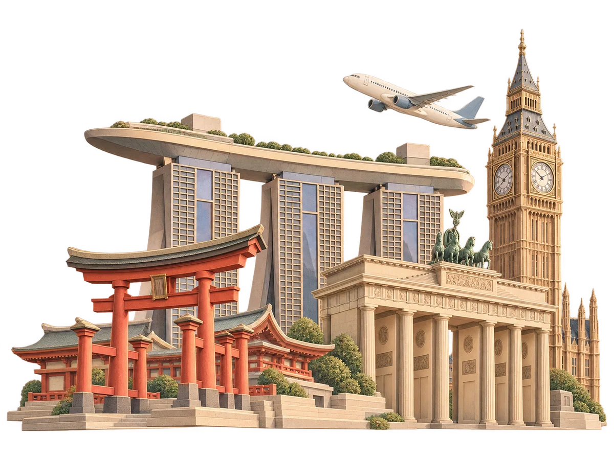

Program internasional SMK Telkom Malang
Study Overseas
2028
Pengalaman akademik, industri, dan teknologi internasional.
Perjalanan belajar bagi siswa SMK Telkom Malang untuk membangun kepercayaan diri, memperluas wawasan global, dan mengenal pilihan studi serta karier.

Detail Program
Pengantar program
Membuka wawasan,
membangun masa depan.
Pendidikan, teknologi, dan dunia kerja semakin terhubung secara global. Selain kompetensi akademik dan teknis, siswa perlu mengenal bagaimana kampus, industri, dan kehidupan masyarakat berkembang di berbagai negara.
SMK Telkom Malang merencanakan Study Overseas Program sebagai pengalaman belajar internasional yang menggabungkan kegiatan akademik, kunjungan industri, eksplorasi teknologi, dan pengenalan budaya.
Siswa mengikuti kegiatan yang terstruktur, berinteraksi dengan lingkungan baru, lalu mencatat serta merefleksikan pembelajarannya.
Kenali tujuan program →Detail Program
Apa yang ingin dicapai?
Pengalaman yang membantu siswa mengenali pilihan studi, kompetensi profesional, dan arah masa depannya.
Wawasan akademik internasional
Mengenal sistem pendidikan tinggi, kehidupan mahasiswa, dan budaya belajar di universitas.
Gambaran dunia kerja
Melihat lingkungan kerja, proses bisnis, dan kompetensi perusahaan internasional.
Inspirasi studi dan karier
Mengenali program studi, universitas, profesi, dan kemungkinan jalur karier.
Paparan teknologi
Melihat perkembangan dan penerapan teknologi di perusahaan maupun pusat inovasi.
Komunikasi dan kepercayaan diri
Berlatih berinteraksi, beradaptasi, serta memahami lingkungan lintas budaya.
Detail Program
Empat pengalaman utama
Pengalaman di universitas
Mengenal kehidupan kampus melalui kegiatan akademik dan interaksi dengan komunitas universitas.
- Campus orientation dan mini lecture
- Workshop akademik dan student sharing
- Faculty sharing dan kegiatan kompetisi
- Informasi admission, beasiswa, dan jalur karier
Bentuk kegiatan menyesuaikan institusi yang dikunjungi.
Mengenal dunia kerja internasional
Mengamati proses kerja dan perkembangan profesi melalui interaksi dengan perusahaan.
- Company introduction dan observasi tempat kerja
- Presentasi teknologi serta demonstrasi produk
- Professional sharing dan career talk
- Diskusi dengan profesional dan praktik jika tersedia
Bidang eksplorasi: software, game, telekomunikasi, jaringan, cloud, cyber security, dan digital innovation.
Melihat teknologi dari dekat
Mengamati, mengeksplorasi, mencoba, dan mendiskusikan teknologi yang relevan dengan kompetensi siswa.
- Innovation center dan research laboratory
- Robotics center dan maker space
- Science & technology museum
- Smart city center
Bidang eksplorasi: AI, robotics, IoT, smart manufacturing, dan electric vehicle.
Mengenal negara tujuan
Memahami budaya dan kehidupan masyarakat melalui pengalaman langsung di kota yang dikunjungi.
- Budaya, sejarah, dan masyarakat setempat
- Transportasi serta sistem kehidupan kota
- Landmark dan lingkungan negara tujuan
- Interaksi dan adaptasi lintas budaya
Pengalaman budaya mendukung kegiatan akademik, industri, dan teknologi sebagai inti program.
Detail Program
Perjalanan belajar siswa
- ExploreMengenal negara, budaya, institusi, dan lingkungan baru.
- LearnMengikuti workshop, lecture, sharing, dan kegiatan akademik.
- ExperienceMengalami suasana kampus, tempat kerja, dan teknologi.
- ReflectMencatat pembelajaran serta wawasan pribadi.
- DocumentMenyusun pengalaman menjadi bagian dari portofolio.
Learning journal
Siswa mencatat hal baru yang dipelajari, teknologi yang ditemukan, profesi dan jurusan yang menarik, serta keterampilan yang perlu dikembangkan.
Detail Program
Yang dibawa pulang
Pengalaman dan wawasan
- Kehidupan dan pilihan pendidikan tinggi
- Dunia kerja serta kompetensi global
- Perkembangan teknologi dan industri
- Budaya dan lingkungan internasional
- Kemandirian, keterbukaan, dan kemampuan beradaptasi
Portofolio belajar
- Learning journal
- Laporan refleksi dan dokumentasi
- Refleksi pilihan studi serta karier
- Sertifikat partisipasi, workshop, atau kunjungan apabila tersedia
Sertifikat mengikuti ketersediaan institusi. Pembelajaran dan pengalaman menjadi hasil utama program.
Rencana keberangkatan
Januari 2028
Program akan memilih satu rute kunjungan. Keputusan mempertimbangkan pilihan orang tua dan siswa, kelayakan kegiatan, serta kesiapan perjalanan.
| Rute | Perkiraan biaya | Keterangan |
|---|---|---|
| Singapura – Malaysia | Rp15 juta* | Estimasi |
| China / Jepang | Rp25 juta* | Estimasi |
| Inggris / Jerman | — | Masih dalam proses observasi dan diskusi |
Estimasi awal. Harga dapat berubah mengikuti kurs dan konfirmasi penyelenggara, serta belum termasuk industrial paid visit apabila ada.
Lihat jadwal tiap rute →Jadwal rute
Rencana perjalanan
Pilih rute untuk melihat susunan kegiatan. Jadwal kunjungan dapat menyesuaikan institusi dan pengaturan perjalanan.
- Hari 1Keberangkatan dan half day tour Singapura.
- Hari 2University visit, Singapore city tour, lalu perjalanan ke Kuala Lumpur.
- Hari 3Malaysia city tour dan tech center.
- Hari 4University / industry visit.
- Hari 5University / industry visit.
- Hari 6Persiapan proses pulang.
- Hari 1Keberangkatan.
- Hari 2University visit dan half city tour.
- Hari 3Perjalanan ke Shenzhen, city tour, dan tech market.
- Hari 4Industrial visit dan perjalanan ke Hong Kong.
- Hari 5Kepulangan Hong Kong – Surabaya.
- Hari 1Keberangkatan.
- Hari 2Tiba di Narita, Ueno Park, dan persiapan check-in.
- Hari 3Factory visit.
- Hari 4University visit.
- Hari 5City tour dan persiapan keberangkatan ke bandara.
- Hari 6Tiba di Surabaya.
Rute Singapura – Malaysia
Institusi yang diharapkan dikunjungi
Daftar berikut merupakan rencana kunjungan untuk rute SGP–MY dan dapat berubah mengikuti konfirmasi institusi serta susunan perjalanan.
| Institusi / lokasi | Negara |
|---|---|
| National University of Singapore (NUS) | Singapura |
| Nanyang Technological University (NTU) | Singapura |
| Singapore Management University (SMU) | Singapura |
| Science Centre Singapore (Jurong East) | Singapura |
| Universiti Malaya (UM) | Malaysia |
| Asia Pacific University | Malaysia |
| Petrosains Discovery Centre (KLCC) | Malaysia |
| PROTON City / Automotive High-Tech Valley | Malaysia |
| Royal Selangor Pewter Visitor Centre | Malaysia |
| Beryl's Chocolate Factory & Museum | Malaysia |
Persiapan
Keselamatan dan pendampingan
Pendampingan siswa
- Guru pendamping dan program leader
- Local guide
- Pembagian kelompok peserta
- Pengawasan hotel dan transportasi
Manajemen perjalanan
- Komunikasi orang tua serta kontak darurat
- Informasi kesehatan siswa
- Paspor dan dokumen imigrasi
- Tata tertib dan penanganan keadaan darurat
Detail SOP disampaikan pada tahap program final dan pre-departure briefing.
Persiapan
Dari perencanaan hingga kepulangan
- 01
Survei awal
Pemetaan minat, destinasi, dan harapan kegiatan.
- 02
Pengembangan program
Penyusunan kegiatan akademik, industri, teknologi, dan budaya.
- 03
Seleksi penyelenggara
Evaluasi institusi, itinerary, keamanan, dan biaya.
- 04
Sosialisasi orang tua
Informasi program final, biaya, jadwal, dan pendaftaran.
- 05
Pendaftaran
Administrasi dan pendaftaran peserta.
- 06
Persiapan keberangkatan
Paspor, visa, briefing, dan pertemuan orang tua.
- 07
Pelaksanaan program
Kegiatan Study Overseas di negara tujuan.
- 08
Refleksi dan portofolio
Laporan pembelajaran serta evaluasi program.
Persiapan
Siswa, orang tua, dan sekolah
Untuk siswa
- Memiliki motivasi belajar dan mengikuti kegiatan
- Menjaga disiplin, etika, serta nama baik sekolah
- Bekerja dalam kelompok dan aktif berinteraksi
- Mendokumentasikan pembelajaran
Untuk orang tua
- Memahami tujuan pendidikan program
- Mendukung kesiapan siswa dan dokumen perjalanan
- Memberikan informasi kesehatan secara lengkap
- Mengikuti sosialisasi dan kanal komunikasi sekolah
Kesiapan siswa, dukungan orang tua, dan koordinasi sekolah membantu menciptakan pengalaman belajar yang optimal.
Untuk orang tua / wali
Pilihan rute dan masukan
Informasi Program
Pertanyaan umum
Apakah ini program kuliah di luar negeri?
Study Overseas adalah pengalaman kunjungan belajar. Peserta mengenal kampus, industri, teknologi, dan budaya; program ini tidak mencakup pendaftaran atau penerimaan universitas.
Kapan program dilaksanakan dan berapa biayanya?
Rencana keberangkatan pada Januari 2028. Estimasi SGP–MY Rp15 juta dan China / Jepang Rp25 juta. Harga dapat berubah mengikuti kurs dan belum termasuk industrial paid visit apabila ada.
Apakah semua rute akan dijalankan?
Tidak. Program hanya akan memilih satu rute kunjungan. Keputusan mempertimbangkan pilihan orang tua dan siswa, kelayakan program, serta kesiapan perjalanan.
Apakah kampus dan perusahaan sudah ditentukan?
Daftar rute SGP–MY adalah rencana kunjungan dan masih dapat berubah mengikuti konfirmasi institusi. Rute lain masih dalam penyiapan.
Apakah peserta mendapat sertifikat?
Sertifikat mengikuti ketersediaan institusi. Jurnal, refleksi, dan dokumentasi tetap menjadi bagian dari portofolio belajar siswa.
SMK Telkom Malang
Informasi lebih lanjut
Tim Study Overseas
Untuk perkembangan program dan sosialisasi, hubungi tim sekolah melalui kontak berikut.
info@smktelkom-mlg.sch.id(0341) 712500Jl. Danau Ranau No. 01, Sawojajar
Kota Malang 65139
Pelajari informasi lengkap
Simpan booklet PDF untuk dibaca bersama siswa dan orang tua.
Unduh booklet PDF Website SMK Telkom Malang ↗